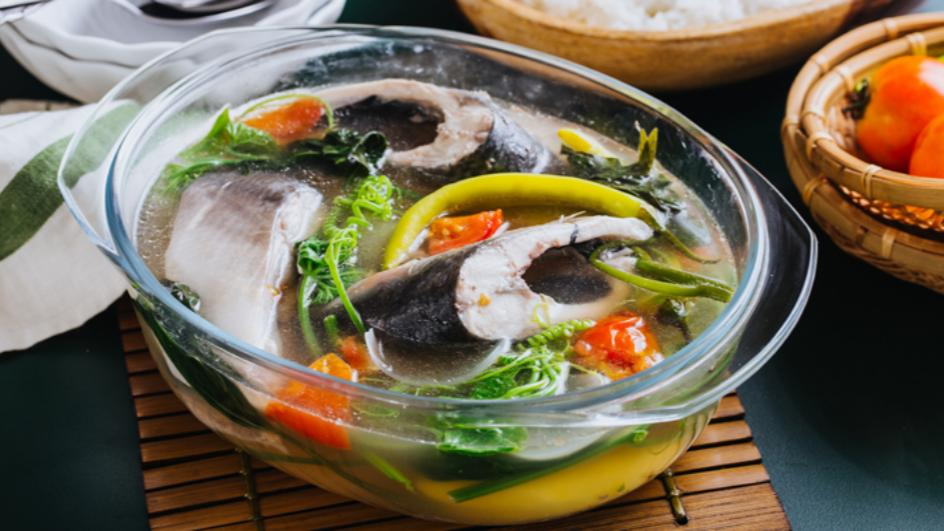
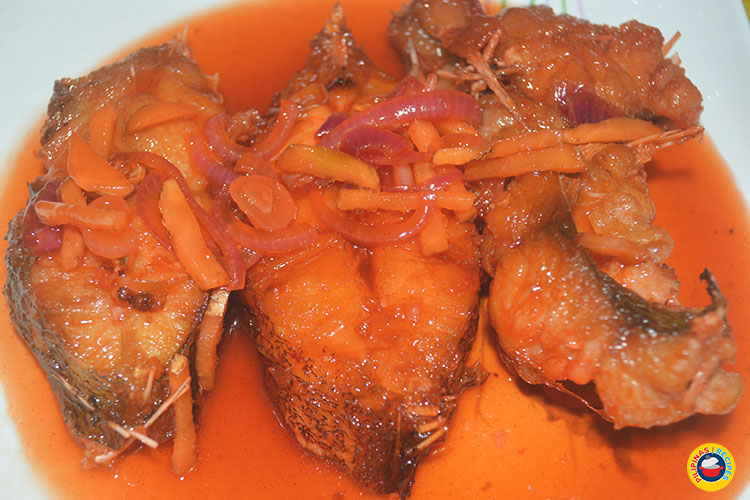
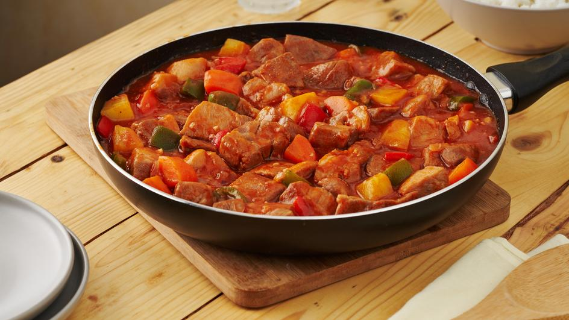
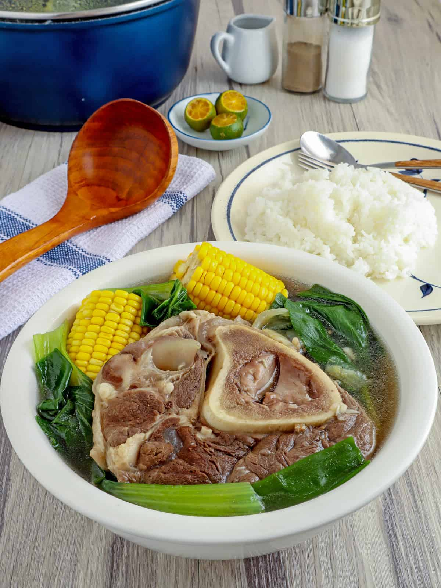
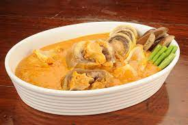
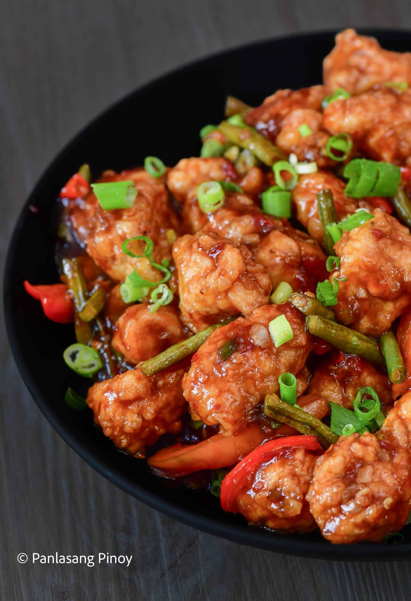

Sinigang Bangus
- 2 lbs. bangus cleaned and sliced
- 23 grams Knorr Sinigang sa Sampaloc with Miso
- 8 okras cleaned
- 3 long green peppers
- 12 string beans cut in 2-inch length
- 4 ounces daikon radish sliced
- 1 bunch mustard leaves
- 3 tomatoes quartered
- 2 onions quartered
- 1 quart water
- Fish sauce and ground black pepper to taste
Filipino Style Escabeche
- 1 onion, thinly sliced
- 3 cloves garlic, chopped
- 2 thumbs ginger, julienned
- 1 red bell pepper, julienned
- 1 green bell pepper, julienned
- 1 carrot, julienned
- 3 tablespoons white vinegar
- 4 tablespoons banana ketchup
- 3 tablespoons white sugar
- 1 cup water
- 1 tablespoon cornstarch
- 2 tablespoons cooking oil
- Salt and ground black pepper to taste
Pork Afritada
- 2 lbs. pork belly cut into large cubes
- 1 piece Knorr Pork Cube
- 3 pieces hotdogs, sliced
- 2 pieces potatoes, cut into large cubes
- 3 pieces carrots, cut into large cubes
- 16 ounces tomato sauce
- 3 pieces bay leaves
- 1 piece red bell pepper
- 1 piece green bell pepper
- 5 cloves garlic, chopped
- 1 piece onion, chopped
- 1 1/2 cups water
- Salt and ground black pepper to taste
- 3 tablespoons cooking oil
Porkchop Steak

- 4 lbs. pork chop
- 1 piece Knorr Pork Cube
- ½ cup soy sauce
- 1 piece lemon
- 4 pieces yellow onions, sliced into rings
- 10 cloves garlic, crushed and chopped
- 1 teaspoon cornstarch
- 2 cups water
- 3 tablespoons cooking oil
- Ground black pepper to taste
Bulalo
- 2 lbs beef shank
- ½ cabbage, whole leaf individually detached
- 1 bundle bok choy
- 2 cobs corn, each cut into 3 parts
- 2 tablespoons whole peppercorn
- ½ cup green onions, cut into 1 ½ inch pieces
- 1 onion
- 34 ounces water
- Fish sauce to taste (optional)
Kare Kare Buntot ng Baka
- 4 lbs. Ox tail
- 1 Knorr Beef Cube
- 1 cup peanut paste
- 2 teaspoons annatto powder
- 6 cups water
- 1 onion, diced
- 4 cloves garlic, chopped
- Ground black pepper and fish sauce to taste
- 3 tablespoons cooking oil
- 1 Chinese eggplant, sliced
- 12 ounces banana blossoms
- 1 bunch bok choy
- 15 string beans, cut into 2-inch pieces
Chili Ginger Chicken
- 1 lb. boneless chicken breast, sliced into serving pieces
- ¾ cup all-purpose flour
- 3 tablespoons cornstarch
- 2 eggs, beaten
- 1 red bell pepper, sliced
- 1 Thai chili pepper, chopped
- 6 long green beans, cut into 2-inch pieces
- 2 tablespoons green onion, chopped
- 3 thumbs ginger, minced
- 2 cloves garlic, minced
- 1 cup cooking oil
- Salt and ground black pepper to taste
- 1 ½ teaspoons Good Life Sesame Oil
- ¼ cup soy sauce
- 2 tablespoons honey
- 4 tablespoons sweet chili sauce
- 2 teaspoons white vinegar
- 2 tablespoons tomato ketchup
- ¼ cup water
- 2 tablespoons cornstarch
Chicken Adobo

- 2 lbs. chicken, cut into serving pieces
- 3 ounces chicken liver
- ½ Knorr Chicken Cube
- 1 ½ cups lemon lime soda
- 6 eggs, boiled (optional)
- 3 tablespoons white vinegar
- ¼ cup soy sauce
- 1 head garlic, crushed
- 3 bay leaves
- 2 teaspoons peppercorn, cracked
- 2 tablespoons cornstarch
- 1 cup water
- 1 bunch green onions
- 1 ½ teaspoons butter
- ¼ cup cooking oil
- 2 cups PLAIN yogurt
- ½ Knorr Chicken Cube